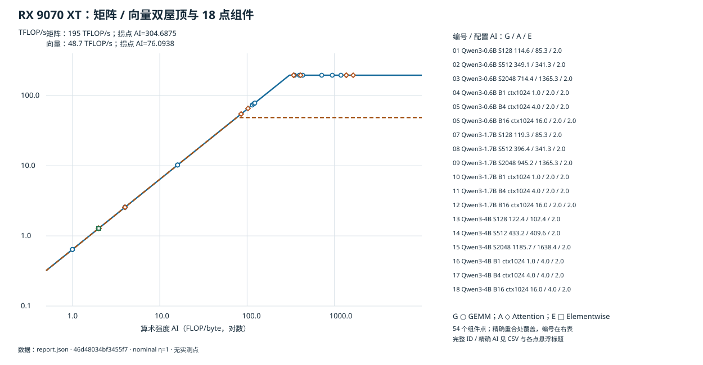
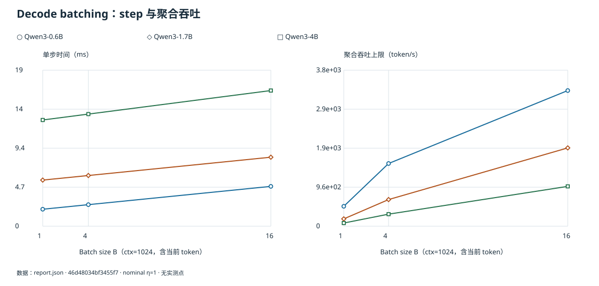
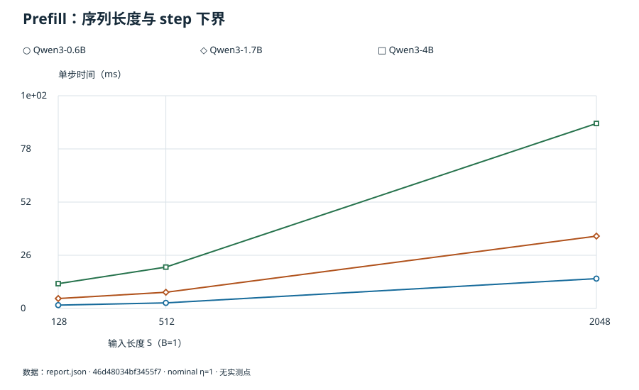
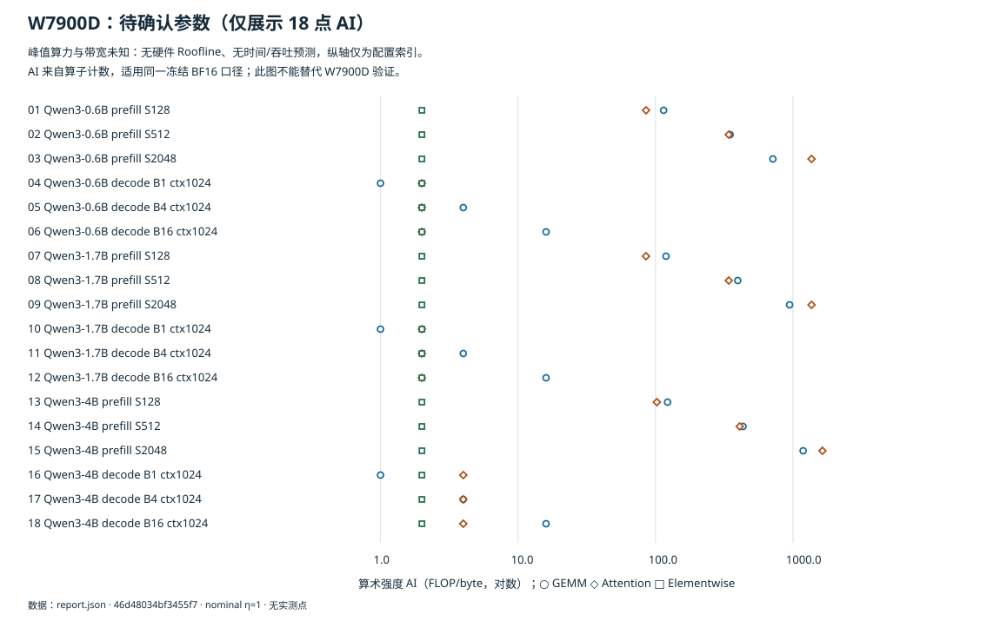

协议 hello_mlsys_ch1_nominal_v1；创建于 2026-11-20T05:46:14.271Z。
解析预测完成；不代表历史实测、先预测后测量纪律或 W7900D 硬件验收已完成。
JSON 底稿 · 组件 CSV · Markdown 完整报告

每个组件选择矩阵/向量峰值，取 max(compute, memory)，step 再求和。全局 AI 只供展示。
| 模型 | Phase | B | S / ctx | GEMM | Attention | Elementwise | Step ms | 聚合 token/s |
|---|---|---|---|---|---|---|---|---|
| Qwen3-0.6B | prefill | 1 | 128 | memory | memory | memory | 1.628570 | 78596.58 |
| Qwen3-0.6B | prefill | 1 | 512 | compute | compute | memory | 2.712782 | 188736.16 |
| Qwen3-0.6B | prefill | 1 | 2048 | compute | compute | memory | 14.551406 | 140742.41 |
| Qwen3-0.6B | decode | 1 | 1024 | memory | memory | memory | 2.046131 | 488.73 |
| Qwen3-0.6B | decode | 4 | 1024 | memory | memory | memory | 2.597171 | 1540.14 |
| Qwen3-0.6B | decode | 16 | 1024 | memory | memory | memory | 4.801331 | 3332.41 |
| Qwen3-1.7B | prefill | 1 | 128 | memory | memory | memory | 4.839834 | 26447.19 |
| Qwen3-1.7B | prefill | 1 | 512 | compute | compute | memory | 7.892416 | 64872.40 |
| Qwen3-1.7B | prefill | 1 | 2048 | compute | compute | memory | 35.269945 | 58066.44 |
| Qwen3-1.7B | decode | 1 | 1024 | memory | memory | memory | 5.560269 | 179.85 |
| Qwen3-1.7B | decode | 4 | 1024 | memory | memory | memory | 6.111846 | 654.47 |
| Qwen3-1.7B | decode | 16 | 1024 | memory | memory | memory | 8.318157 | 1923.50 |
| Qwen3-4B | prefill | 1 | 128 | memory | memory | memory | 12.091392 | 10586.04 |
| Qwen3-4B | prefill | 1 | 512 | compute | compute | memory | 20.167395 | 25387.51 |
| Qwen3-4B | prefill | 1 | 2048 | compute | compute | memory | 90.184586 | 22708.98 |
| Qwen3-4B | decode | 1 | 1024 | memory | memory | memory | 12.806106 | 78.09 |
| Qwen3-4B | decode | 4 | 1024 | memory | memory | memory | 13.515622 | 295.95 |
| Qwen3-4B | decode | 16 | 1024 | memory | memory | memory | 16.353690 | 978.37 |
Prefill token/s 是输入处理率；decode token/s 是生成速率，不能混作服务吞吐。



差异属于公式、流量假设与近似表口径，不标作硬件测量误差或校准通过。
| 0.6B 配置 | 课程约数 ms | 本协议精确 ms | 差值 ms | 一位小数相同 |
|---|---|---|---|---|
| qwen3_0_6b_prefill_s128 | 1.5 | 1.628570 | +0.128570 | 否 |
| qwen3_0_6b_prefill_s512 | 2.7 | 2.712782 | +0.012782 | 是 |
| qwen3_0_6b_prefill_s2048 | 14.0 | 14.551406 | +0.551406 | 否 |
| qwen3_0_6b_decode_b1 | 2.1 | 2.046131 | -0.053869 | 否 |
| qwen3_0_6b_decode_b4 | 2.6 | 2.597171 | -0.002829 | 是 |
| qwen3_0_6b_decode_b16 | 4.9 | 4.801331 | -0.098669 | 否 |
| 算子 | FLOPs | Bytes | AI | 判定 | t_compute ms | t_memory ms | t ms |
|---|---|---|---|---|---|---|---|
| matmul_4096_bf16 | 137438953472 | 100663296 | 1365.333333 | compute | 0.704815 | 0.157286 | 0.704815 |
| layernorm_2048_1024_bf16 | 8388608 | 8388608 | 1.000000 | memory | 0.000172 | 0.013107 | 0.013107 |
| attention_flash_s512_28_layers | 60129542144 | 176160768 | 341.333333 | compute | 0.308357 | 0.275251 | 0.308357 |
| attention_naive | 60129542144 | 645922816 | 93.090909 | memory | 0.308357 | 1.009254 | 1.009254 |
ms, bytes, decimal GB/s and TFLOP/s; BF16=2 bytes; FMA=2 FLOPsP_linear=L*(2*h*d_q+2*h*d_kv+3*h*intermediate); P_head=h*vocabF=2*P_linear*S; D=2*P_linear+a_prefill*L*h*S; optional last-token head adds 2*P_head to F,DF=2*(P_linear+P_head)*B; D=2*(P_linear+P_head)+a_decode*L*h*BF=4*L*d_q*S*S; D=2*S*(2*d_q+2*d_kv)*L; full square, not causal triangleF=4*L*B*ctx*d_q; D=4*L*B*ctx*d_kv; ctx includes current positionF=f_elementwise*L*h*tokens; D=d_elementwise*L*h*tokens; vector pipelinet_ms=max(F/(pipeline_TFLOPS*1e9),D/(bandwidth_GBps*1e6)); eta=1t_step_ms=sum(component.t_ms)+t_fixed_ms; global AI is display onlyD_naive=D_flash+4*L*q_heads*S*S; same declared F; asymptotic AI=head_dimM=N=K=4096; F=2*M*N*K; D=2*(M*K+K*N+M*N)S=2048,h=1024; F=4*S*h; D=4*S*h; affine/reduction extras omitted teaching countreport data SHA256：46d48034bf3455f710ebb30919e72e43f653259a7b67aa1646162990c4b4907f。图、表、CSV 均来自同一 report 对象。完整模型/计划/实现 hash、逐点 prediction_id 和时间见 JSON；未读取或重标课程已有测量为本次实验。